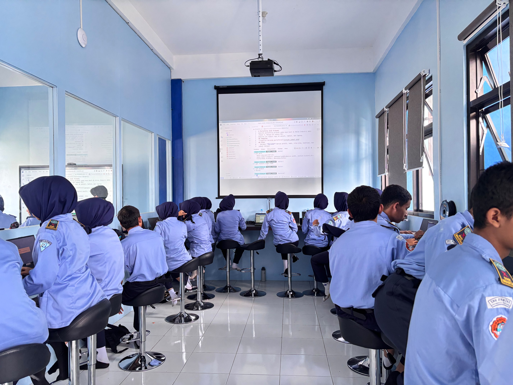
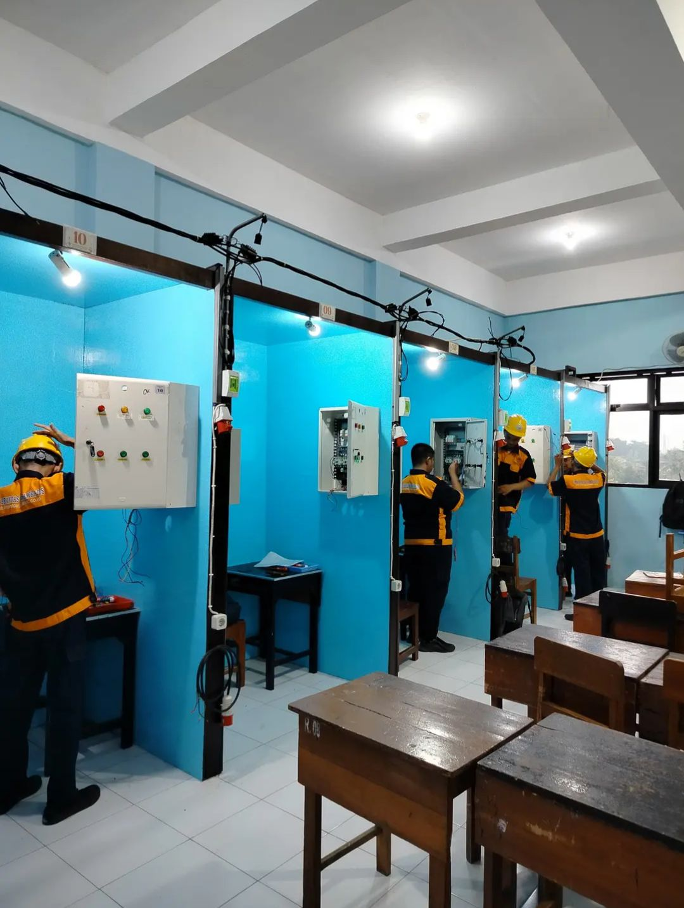
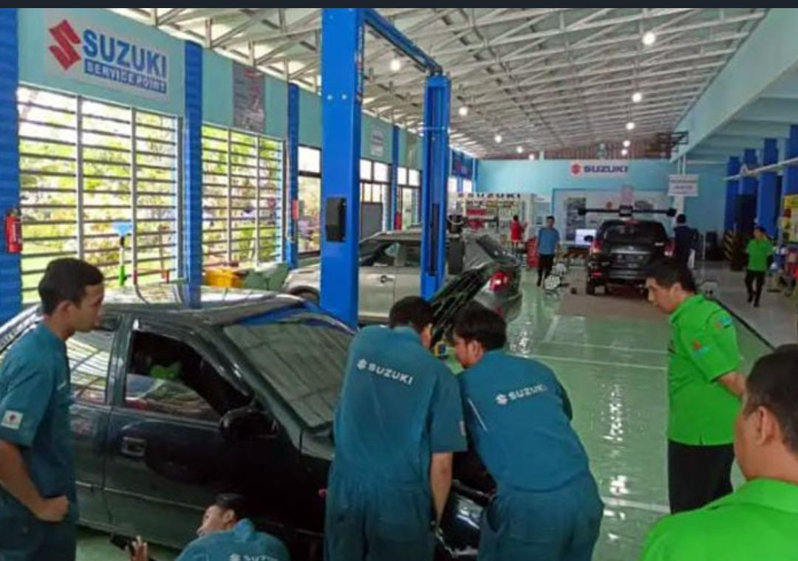
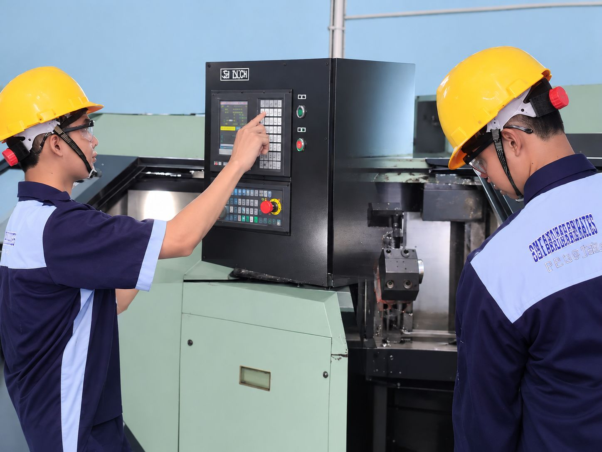
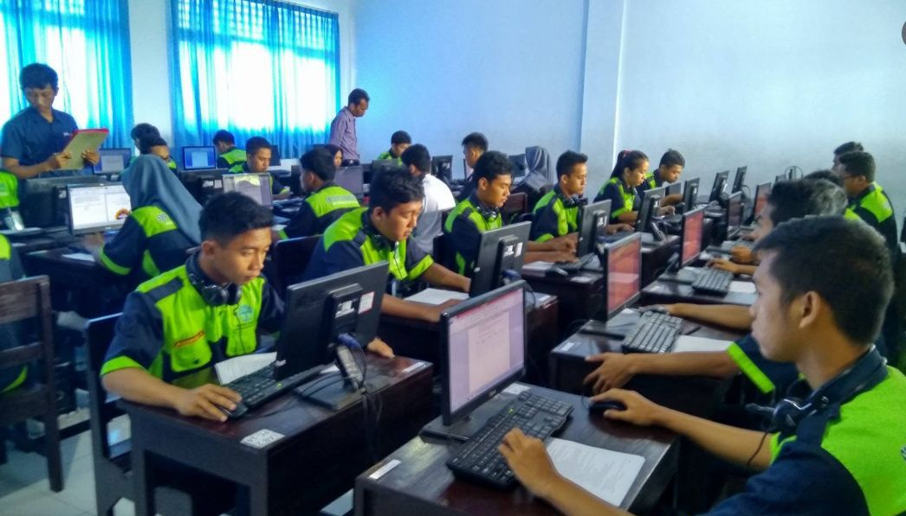
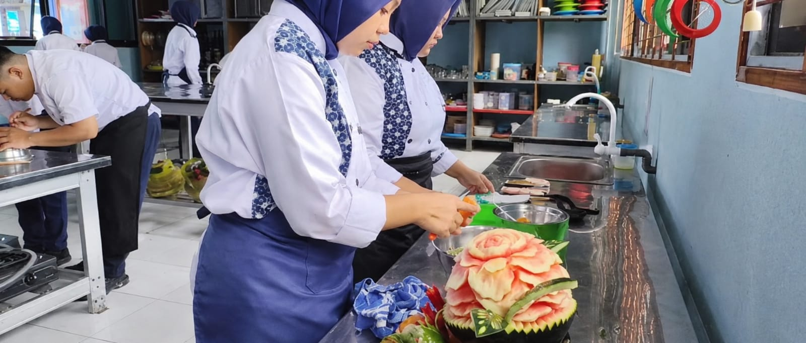
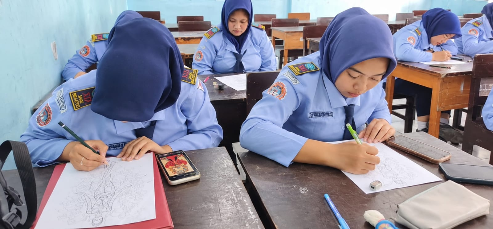

SMK BRANTAS KARANGKATES
Mewujudkan generasi yang unggul, terampil, kreatif, dan berkarakter.

Mengenal Lebih Dekat SMK Brantas Karangkates
SMK Brantas Karangkates merupakan lembaga pendidikan menengah kejuruan yang berfokus pada pengembangan keterampilan dan kompetensi peserta didik.
Melalui berbagai program keahlian, sekolah memberikan kesempatan kepada peserta didik untuk mengembangkan potensi, kreativitas, serta keterampilan sesuai bidangnya.
Sejarah SMK Brantas Karangkates

Awal Berdirinya Sekolah
SMK Brantas Karangkates merupakan salah satu lembaga pendidikan kejuruan swasta terkemuka di Kabupaten Malang yang resmi berdiri pada tanggal 2 Mei 1995 di bawah naungan Yayasan Pendidikan Kartika. Cikal bakal sekolah ini berasal dari SMA/SMK Kartika yang pada awal tahun 1990-an sempat mengalami masa sulit dan kemunduran jumlah siswa secara drastis. Melihat kondisi tersebut, lima orang guru bersama tujuh pendiri visioner bertekad melakukan pembaruan menyeluruh dengan bertransformasi menjadi SMK Brantas Karangkates yang beralamat di Jalan Lolaras No. 14, Karangkates, Kecamatan Sumberpucung, Kabupaten Malang. Memulai langkah baru dengan sekitar 90 siswa dan dua kompetensi keahlian, sekolah ini berhasil bangkit melalui penerapan budaya disiplin yang kuat serta pembentukan karakter siswa. Kini, SMK Brantas Karangkates telah berkembang pesat menjadi sekolah kejuruan unggulan terakreditasi A yang menampung ribuan peserta didik dengan berbagai pilihan jurusan modern di bidang teknologi, rekayasa, hingga pariwisata.
Visi dan Misi
Tujuan dan komitmen SMK Brantas Karangkates dalam menciptakan generasi unggul.
Visi
Menjadi lembaga pendidikan kejuruan yang unggul, berkarakter, kompeten, dan mampu bersaing di dunia kerja serta dunia usaha.
Misi
- Menyelenggarakan pendidikan yang berkualitas dan berorientasi pada kompetensi.
- Mengembangkan keterampilan dan kreativitas peserta didik.
- Menanamkan sikap disiplin, tanggung jawab, dan berkarakter.
- Meningkatkan kerja sama dengan dunia usaha dan dunia industri.
- Mempersiapkan lulusan yang mandiri dan siap menghadapi perkembangan teknologi.
Kompetensi Keahlian
Pilihan program keahlian untuk mengembangkan potensi dan keterampilan peserta didik.

Pengembangan Perangkat Lunak dan Gim
Mempelajari pemrograman, pengembangan aplikasi, dan teknologi digital.

Teknik Ketenagalistrikan
Mempelajari instalasi, pemeliharaan, dan sistem tenaga listrik.

Teknik Otomotif
Mempelajari teknologi kendaraan dan perawatan otomotif.

Teknik Mesin
Mempelajari proses produksi, mesin, dan teknologi manufaktur.

Desain Komunikasi Visual
Mempelajari desain grafis, ilustrasi, dan komunikasi visual.

Kuliner
Mempelajari pengolahan makanan dan pengembangan produk kuliner.

Tata Busana
Mempelajari desain, pembuatan, dan pengembangan produk busana.
Kontak Sekolah
Hubungi SMK Brantas Karangkates untuk informasi lebih lanjut.
Informasi Sekolah
Alamat
SMK Brantas Karangkates
JL. Lolaras 14 Karangkates Kec. Sumberpucung-Kab. Malang
Telpon
(0341) 385876
BKK
082139255609 (P.Bambang)